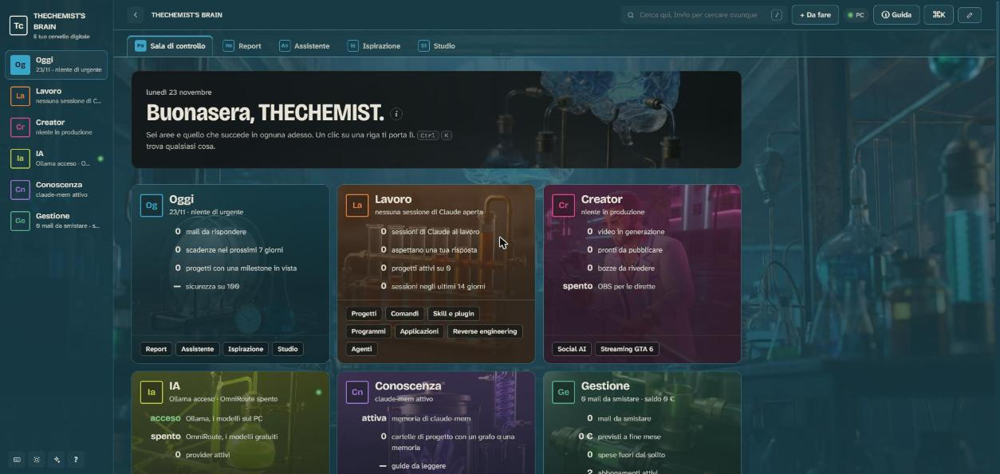
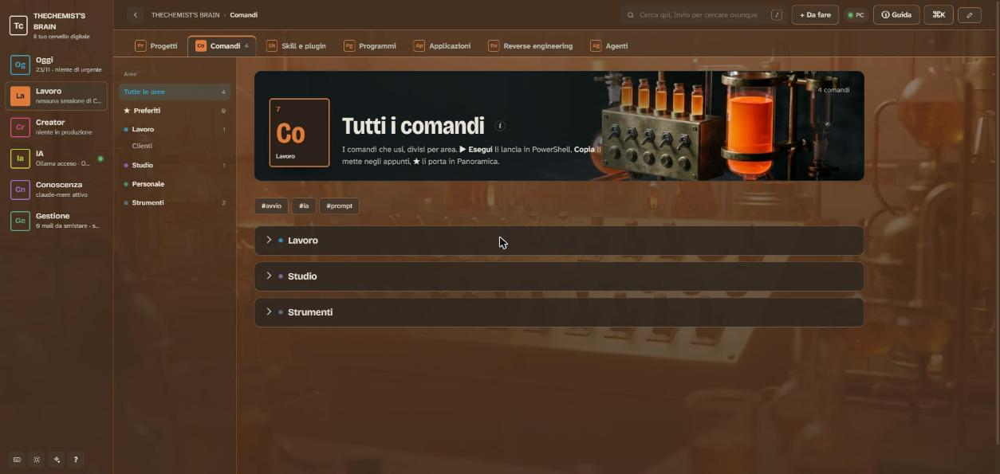
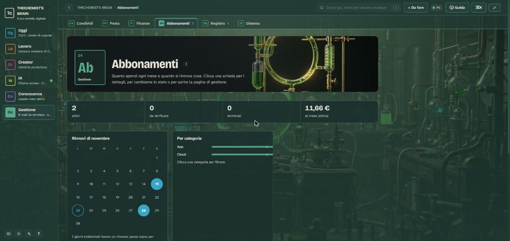

THECHEMIST'S BRAIN
Il tuo agente privato, sul tuo PC · English below
È la dashboard che tiene insieme tutto quello che fai al computer. Gira sul tuo PC e usa l'intelligenza artificiale che hai installato lì: i dati restano a casa tua.
- Oggi: cosa c'è da fare, le mail a cui rispondere, le scadenze, quanto è uscito.
- Lavoro: i progetti con il loro avanzamento e gli agenti di IA al lavoro.
- Creator: i contenuti per i social, preparati e pubblicati in due lingue.
- IA: i modelli sul PC e l'assistente che risponde sui tuoi dati.
- Conoscenza: note, mappe dei progetti, ricerca in un secondo.
- Gestione: abbonamenti, posta, sicurezza del PC.
Com'è fatta
Tre pezzi e nient'altro: un server in Python che usa solo la libreria standard, una pagina sola, un file di dati. Niente cloud e niente account: risponde solo dal tuo PC.

Prova la base in 5 minuti
La dashboard intera è grande, ma l'idea sta in tre file. Ti serve solo Python 3 (da python.org): nessuna libreria da installare.
- Crea una cartella
braine salvaci dentro i tre file qui sotto. - Apri PowerShell in quella cartella e scrivi
python server.py. - Apri il browser su
http://127.0.0.1:8777: vedi le tue tre aree. - Cambia una riga di
dati.json, salva e ricarica la pagina: è cambiata anche lì.
server.py
import json
from http.server import BaseHTTPRequestHandler, ThreadingHTTPServer
from pathlib import Path
QUI = Path(__file__).parent
class Brain(BaseHTTPRequestHandler):
def do_GET(self):
if self.path == "/api/dati":
corpo, tipo = (QUI / "dati.json").read_bytes(), "application/json"
else:
corpo, tipo = (QUI / "pagina.html").read_bytes(), "text/html; charset=utf-8"
self.send_response(200)
self.send_header("Content-Type", tipo)
self.end_headers()
self.wfile.write(corpo)
print("Apri http://127.0.0.1:8777")
ThreadingHTTPServer(("127.0.0.1", 8777), Brain).serve_forever()pagina.html
<!doctype html>
<meta charset="utf-8">
<title>Il mio Brain</title>
<style>
body { font-family: system-ui; background: #10131a; color: #e8eaf0; margin: 40px; }
#aree { display: grid; grid-template-columns: repeat(auto-fit, minmax(220px, 1fr)); gap: 16px; }
.area { background: #1a1f2b; border-radius: 12px; padding: 16px; }
</style>
<h1>Il mio Brain</h1>
<div id="aree"></div>
<script>
fetch("/api/dati").then(r => r.json()).then(d => {
for (const a of d.aree) {
const box = document.createElement("div");
box.className = "area";
box.innerHTML = "<h2></h2><ul></ul>";
box.querySelector("h2").textContent = a.nome;
for (const c of a.cose) box.querySelector("ul").appendChild(document.createElement("li")).textContent = c;
document.getElementById("aree").appendChild(box);
}
});
</script>dati.json
{
"aree": [
{
"nome": "Oggi",
"cose": [
"Rispondere a Marta",
"Pagare la bolletta entro venerdì"
]
},
{
"nome": "Progetti",
"cose": [
"Sito nuovo: a metà",
"Corso di inglese: lezione 4"
]
},
{
"nome": "Abbonamenti",
"cose": [
"Musica: 10,99 € il 15",
"Spazio cloud: 1,99 € il 28"
]
}
]
}Hai finito quando: la pagina mostra le aree che hai scritto tu in dati.json.
Il server risponde solo a 127.0.0.1, cioè al tuo PC: dalla rete non lo vede nessuno.
Da qui alla dashboard completa
Il resto è lo stesso schema, cresciuto: ogni area ha le sue sezioni e il server sa fare molte più cose.
- esegue i tuoi comandi con un clic e li tiene divisi per area;
- ti avvisa prima che un abbonamento si rinnovi;
- cerca in un colpo solo tra comandi, progetti, note e mail;
- usa l'IA che gira sul PC con Ollama, anche per posta e conti;
- si apre dal telefono come un'app, con il PIN per le azioni delicate;
- scrive ogni modifica in un registro, con data e ora.


- il codice della dashboard, ripulito e pronto da avviare;
- la guida passo passo, con le schermate, in italiano e in inglese;
- tutto il corso sulle guide IA.
L'abbonamento apre a breve: appena è attivo, il link compare qui.
Nel video e nelle schermate i numeri e i nomi sono di esempio.
THECHEMIST'S BRAIN: your private agent on your own PC
The dashboard that keeps everything you do on your computer in one place. It runs on your PC and uses the AI you installed there: your data stays home.
- Today: what's on, emails to answer, deadlines, money spent.
- Work: projects with their progress and AI agents at work.
- Creator: social content, prepared and published in two languages.
- AI: the models on your PC and the assistant that answers from your data.
- Knowledge: notes, project maps, search in a second.
- Admin: subscriptions, mail, PC security.
How it's built
Three pieces and nothing else: a Python server that uses only the standard library, a single page, one data file. No cloud and no account: it answers only from your PC.
Try the base in 5 minutes
The full dashboard is big, but the idea fits in three files. You only need Python 3 (from python.org): no libraries to install.
- Create a
brainfolder and save the three files below in it. - Open PowerShell in that folder and type
python server.py. - Open your browser at
http://127.0.0.1:8777: you see your three areas. - Change a line in
dati.json, save and reload the page: it changed there too.
server.py
import json
from http.server import BaseHTTPRequestHandler, ThreadingHTTPServer
from pathlib import Path
QUI = Path(__file__).parent
class Brain(BaseHTTPRequestHandler):
def do_GET(self):
if self.path == "/api/dati":
corpo, tipo = (QUI / "dati.json").read_bytes(), "application/json"
else:
corpo, tipo = (QUI / "pagina.html").read_bytes(), "text/html; charset=utf-8"
self.send_response(200)
self.send_header("Content-Type", tipo)
self.end_headers()
self.wfile.write(corpo)
print("Apri http://127.0.0.1:8777")
ThreadingHTTPServer(("127.0.0.1", 8777), Brain).serve_forever()pagina.html
<!doctype html>
<meta charset="utf-8">
<title>My Brain</title>
<style>
body { font-family: system-ui; background: #10131a; color: #e8eaf0; margin: 40px; }
#aree { display: grid; grid-template-columns: repeat(auto-fit, minmax(220px, 1fr)); gap: 16px; }
.area { background: #1a1f2b; border-radius: 12px; padding: 16px; }
</style>
<h1>My Brain</h1>
<div id="aree"></div>
<script>
fetch("/api/dati").then(r => r.json()).then(d => {
for (const a of d.aree) {
const box = document.createElement("div");
box.className = "area";
box.innerHTML = "<h2></h2><ul></ul>";
box.querySelector("h2").textContent = a.nome;
for (const c of a.cose) box.querySelector("ul").appendChild(document.createElement("li")).textContent = c;
document.getElementById("aree").appendChild(box);
}
});
</script>dati.json
{
"aree": [
{
"nome": "Today",
"cose": [
"Reply to Marta",
"Pay the bill by Friday"
]
},
{
"nome": "Projects",
"cose": [
"New website: halfway",
"English course: lesson 4"
]
},
{
"nome": "Subscriptions",
"cose": [
"Music: $10.99 on the 15th",
"Cloud storage: $1.99 on the 28th"
]
}
]
}You're done when: the page shows the areas you wrote yourself in dati.json.
The server answers only at 127.0.0.1, that is your own PC: nobody on the network can see it.
From here to the full dashboard
The rest is the same pattern, grown up: each area has its sections and the server does a lot more.
- runs your commands with one click and keeps them grouped by area;
- warns you before a subscription renews;
- searches commands, projects, notes and mail in one go;
- uses the AI running on your PC with Ollama, also for mail and accounts;
- opens on your phone like an app, with a PIN for sensitive actions;
- writes every change to a log, with date and time.
- the dashboard code, cleaned and ready to run;
- the step-by-step guide, with screenshots, in Italian and English;
- the whole AI guides course.
The subscription opens soon: as soon as it's live, the link appears here.
Numbers and names in the video and in the screenshots are sample data.